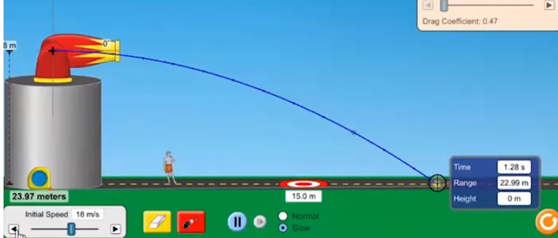
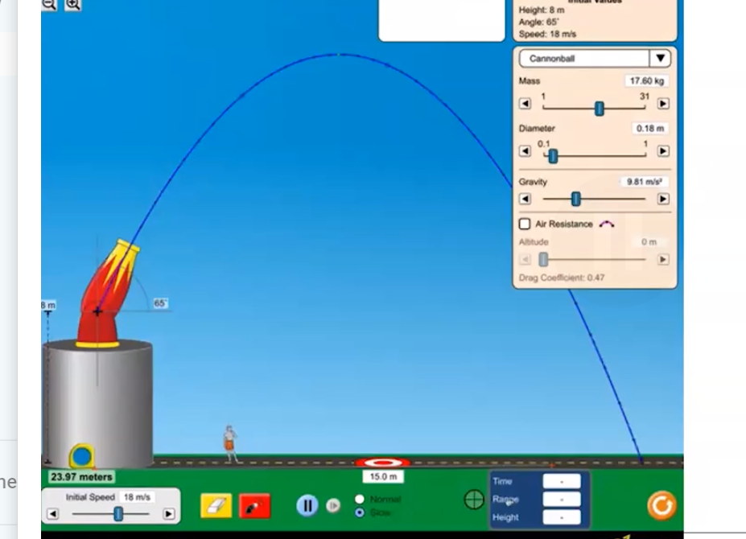

#APPhysics1 #Kinematics
How can we represent the motion of a projectile graphically for:


In both cases, the horizontal velocity will always stay the same until it hits the ground, where it becomes zero
The vertical acceleration
The position versus time graph will look like the trajectory of the object
General projectile motion rules:
Complementary angles produce the same distance (20 and 70, 35 and 55, etc.)